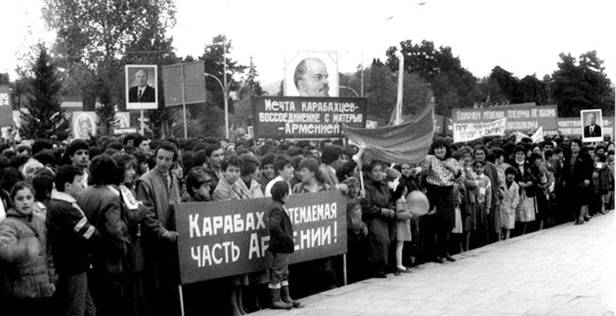

ИСХОД
Керим Керимли
Последняя волна депортаций поднялась в конце 1980-х годов, аккурат к завершению периода, которая вошла в историю как «перестройка». К этому времени в СССР освободили почти всех политзаключенных, повторно и более жестко разоблачили сталинские репрессии и опубликовали все лежавшие под спудом художественные и публицистические произведения. Советские читатели не могли без слез читать роман Анатолия Приставкина «Ночевала тучка золотая» о трагической судьбе мальчишки, попавшего меж жерновов депортации чеченского народа. Советские люди при чтении этого романа не могли подавить своей ненависти к бесчеловечному сталинскому режиму. Между тем в стране разворачивалась новая драма, поднималась новая волна депортаций, депортаций эпохи демократических реформ. Начинались горбачевские депортации. Что это было?
Сталин депортировал турок-месхетинцев из Грузии в Среднюю Азию. При Горбачеве их повторно депортировали, как положено, с погромами и поджогами. Часть осела в России, большая часть нашла убежище в Азербайджане. В самом Азербайджане уже шла ползучая депортация, как это не странно звучит, представителей титульной нации. Как это и где это было? Рассмотрим события.
Первые азербайджанские беженцы из Армении появились в Баку в 1987 году. Они собирались перед зданиями ЦК КПА и Совмина, требовали защиты и помощи. Ответом были стандартные слова об обещании тов. Горбачева «решить вопрос».
1988 год. Из села Баллыджа Степанакертского (из чисто азербайджанских и смешанных сел Аскеранского) района выселены все азербайджанцы. Никто на жалобы жителей не отзывается. Подобная судьба в том же году постигла азербайджанских жителей сел Дашбулаг и Дашкенд. Житель села Дашкенд Исмайыл Абдуллаев (сейчас он живет в селе Рамана близ Баку) описывает, как это происходило: «Руководители района и работники правоохранительных органов настойчиво требовали от нас покинуть село. Мы слали телеграммы в Москву. Оттуда их посылали в Баку, из Баку – в Степанакерт. Руководители вновь грубо требовали от нас выехать из села. Однажды ночью на село, на наши дома, напали, несколько человек сильно избили. Утром я забрал жену, дочь, трех сыновей и пошел в село Малыбейли, нашел себе пристанище там». Все население Малыбейли Шушинского района было изгнано в 1992 году, а 23 декабря 1991-го года село Мешали Аскеранского района было сожжено, 30 жителей убито. Но до этого еще произошли другие события.
Сталин депортировал турок-месхетинцев из Грузии в Среднюю Азию. При Горбачеве их повторно депортировали, как положено, с погромами и поджогами. Часть осела в России, большая часть нашла убежище в Азербайджане. В самом Азербайджане уже шла ползучая депортация, как это не странно звучит, представителей титульной нации. Как это и где это было? Рассмотрим события.
Первые азербайджанские беженцы из Армении появились в Баку в 1987 году. Они собирались перед зданиями ЦК КПА и Совмина, требовали защиты и помощи. Ответом были стандартные слова об обещании тов. Горбачева «решить вопрос».
1988 год. Из села Баллыджа Степанакертского (из чисто азербайджанских и смешанных сел Аскеранского) района выселены все азербайджанцы. Никто на жалобы жителей не отзывается. Подобная судьба в том же году постигла азербайджанских жителей сел Дашбулаг и Дашкенд. Житель села Дашкенд Исмайыл Абдуллаев (сейчас он живет в селе Рамана близ Баку) описывает, как это происходило: «Руководители района и работники правоохранительных органов настойчиво требовали от нас покинуть село. Мы слали телеграммы в Москву. Оттуда их посылали в Баку, из Баку – в Степанакерт. Руководители вновь грубо требовали от нас выехать из села. Однажды ночью на село, на наши дома, напали, несколько человек сильно избили. Утром я забрал жену, дочь, трех сыновей и пошел в село Малыбейли, нашел себе пристанище там». Все население Малыбейли Шушинского района было изгнано в 1992 году, а 23 декабря 1991-го года село Мешали Аскеранского района было сожжено, 30 жителей убито. Но до этого еще произошли другие события.
Первый заместитель
начальника Главного
штаба внутренних
войск СССР,
генерал-майор
внутренних войск
Валерий Петрович
Стариков с солдатами
срочной службы.
Степанакерт, 1989 г.
МЫ ЗДЕСЬ…
20 февраля 1988 года областной совет НКАО принял решение о выходе из состава Азербайджана и вхождении в состав Армении. Областной совет просил ВС СССР, Азербайджана и Армении утвердить это решение. Из Баку в Степанакерт прибыла комиссия. В ее составе был заместитель министра внутренних дел Азербайджана, генерал-майор милиции Камиль Мамедов. В управлении внутренних дел области его встретил заместитель министра Внутренних дел СССР, генерал-полковник Елисов Борис Кузьмич. Азербайджанский генерал стал навытяжку. Замминистра МВД СССР приказал своему подчиненному: «Мы здесь. Вам уже больше в НКАО делать нечего».
Генерал Мамедов был вынужден уехать из Степанакерта. После этого за правопорядок в области, за все, что начало происходить, ответственность должна была, по идее, ложится на МВД СССР. Какой «правопорядок» установило московское начальство в НКАО, показала история.
22-го февраля около Аскерана при разгоне толпы азербайджанцев были убиты два молодых человека. 27-28 февраля в Сумгаите был организован погром, погибло 26 армян и 6 азербайджанцев. Чем занималась власть, партийное и государственное руководство? Оно занималось словоблудием. Намеренно или по глупости? СССР в то время продолжал в целом оставаться жестко централизованным государством, и все процессы по-прежнему направлялись из Москвы.
В октябре 1988 в Баку прибыла комиссия из Москвы, для обсуждения проблемы НКАО. Академик Зия Буниятов поставил перед академиком А.Д. Сахаровым вопрос, «почему бы не дать 200 тыс. азербайджанцев в Армении автономию, симметричную НКАО»? Комиссия вернулась и доложила Генсеку предложения азербайджанцев. Участь азербайджанцев Армении была предрешена. Со второй половины ноября 1988 началось организованное выселение азербайджанцев из Армении. В республику были переброшены части ВВ МВД СССР для помощи местным властям. Более того, из ЦК КПСС в ЦК КПА поступило указание оказать содействие «армянским товарищам». Как вспоминает бывший ответственный работник отдела административных органов ЦК КПА Фазиль Ягубов, первый секретарь ЦК КПА Везиров Абдуррахман Халилович вызвал его к себе и поручил организовать колонну грузовиков в Армению, присовокупив, что это «указание Михаила Сергеевича». Приказание центра было выполнено, азербайджанские коммунисты оказали «армянским товарищам» посильную помощь в массовой депортации азербайджанского населения из республики. Один из беженцев из Армении, который сейчас живет в одном из бакинских сел, рассказал мне, что грузовую машину, для перевозки их имущества и семьи в Азербайджан отправили им из Нахчывана.
Непосредственно после прибытия беженцев из Армении правозащитница Арзу Абдуллаева во главе группы активистов начала обход и опрос беженцев. В результате был составлен список погибших при депортации. Список был послан в Прокуратуру СССР. На основании этого материала Ариф Юнусов опубликовал статью в «Экспресс-хронике» братьев Александра и Кирилла Подрабинек в Москве. Статья называлась «Азербайджанские погромы в Армении» и содержала данные на 216 погибших. Вскоре произошло невиданное дело: в неформальную антисоветскую газету, которую финансировал «Госдеп», пришел официальный ответ за подписью Председателя КГБ Армянской ССР генерал-лейтенанта Юзбашьяна (он погиб уже в независимой Армении от теракта). Там признавалось, что из списка 216 человек погибли на самом деле всего 25 человек, и то не насильственной смертью, а по другим причинам. Точно такой ответ пришел из Прокуратуры СССР. Но составители ответа-отписки не учли одной особенности, что список был разделен по поло-возрастному признаку (отдельно мужчины, женщины и дети). Так вот, по официальному ответу в один день по причине некоего удара погиб мальчик по фамилии Масимов, мужчина Масимов - от экссудативного плеврита, и женщина Масимова - от сердечного приступа. А это была одна семья - мать, отец и сын.
Аналогичный процесс шел в Азербайджане. Тактика была стандартная: власти потакали радикалам и провокаторам, их явно преступные действия какое-то время оставались совершенно безнаказанными. Когда эти действия приводили к крупномасштабному злодеянию, по приказу центра в игру вступали силовые структуры и начинались массовые репрессии. Так произошло и в Сумгаите, и в Баку. В столице советского Азербайджана в январе 1990-го года полмесяца при олимпийском спокойствии советских и партийных органов бесчинствовали толпы люмпенов. И только после погрома 13-го января 1990-го года, когда были убиты 56 армян, Москва начала обсуждать формы своего вмешательства. 15-го января погромы полностью прекратились, простые горожане сами начали контролировать ситуацию и защищать своих соседей и друзей. Но в ночь с 19 по 20-е января 1990-го года Горбачев без предупреждения ввел армию в город. Солдаты вели шквальный огонь по населению и домам, танки крутились на трупах убитых граждан, превращая их в месиво. 131 труп в Баку, 6 убитых в Ленкорани и Нефтчале, комендантский час и чрезвычайное положение – советская власть только так умела управлять народом. Рано утром советский солдат, переброшенный в Баку десантным самолетом и всю ночь стрелявший по городу, спросил у первого прохожего: «Какой это город? Какая эта страна?»
Генерал Мамедов был вынужден уехать из Степанакерта. После этого за правопорядок в области, за все, что начало происходить, ответственность должна была, по идее, ложится на МВД СССР. Какой «правопорядок» установило московское начальство в НКАО, показала история.
22-го февраля около Аскерана при разгоне толпы азербайджанцев были убиты два молодых человека. 27-28 февраля в Сумгаите был организован погром, погибло 26 армян и 6 азербайджанцев. Чем занималась власть, партийное и государственное руководство? Оно занималось словоблудием. Намеренно или по глупости? СССР в то время продолжал в целом оставаться жестко централизованным государством, и все процессы по-прежнему направлялись из Москвы.
В октябре 1988 в Баку прибыла комиссия из Москвы, для обсуждения проблемы НКАО. Академик Зия Буниятов поставил перед академиком А.Д. Сахаровым вопрос, «почему бы не дать 200 тыс. азербайджанцев в Армении автономию, симметричную НКАО»? Комиссия вернулась и доложила Генсеку предложения азербайджанцев. Участь азербайджанцев Армении была предрешена. Со второй половины ноября 1988 началось организованное выселение азербайджанцев из Армении. В республику были переброшены части ВВ МВД СССР для помощи местным властям. Более того, из ЦК КПСС в ЦК КПА поступило указание оказать содействие «армянским товарищам». Как вспоминает бывший ответственный работник отдела административных органов ЦК КПА Фазиль Ягубов, первый секретарь ЦК КПА Везиров Абдуррахман Халилович вызвал его к себе и поручил организовать колонну грузовиков в Армению, присовокупив, что это «указание Михаила Сергеевича». Приказание центра было выполнено, азербайджанские коммунисты оказали «армянским товарищам» посильную помощь в массовой депортации азербайджанского населения из республики. Один из беженцев из Армении, который сейчас живет в одном из бакинских сел, рассказал мне, что грузовую машину, для перевозки их имущества и семьи в Азербайджан отправили им из Нахчывана.
Непосредственно после прибытия беженцев из Армении правозащитница Арзу Абдуллаева во главе группы активистов начала обход и опрос беженцев. В результате был составлен список погибших при депортации. Список был послан в Прокуратуру СССР. На основании этого материала Ариф Юнусов опубликовал статью в «Экспресс-хронике» братьев Александра и Кирилла Подрабинек в Москве. Статья называлась «Азербайджанские погромы в Армении» и содержала данные на 216 погибших. Вскоре произошло невиданное дело: в неформальную антисоветскую газету, которую финансировал «Госдеп», пришел официальный ответ за подписью Председателя КГБ Армянской ССР генерал-лейтенанта Юзбашьяна (он погиб уже в независимой Армении от теракта). Там признавалось, что из списка 216 человек погибли на самом деле всего 25 человек, и то не насильственной смертью, а по другим причинам. Точно такой ответ пришел из Прокуратуры СССР. Но составители ответа-отписки не учли одной особенности, что список был разделен по поло-возрастному признаку (отдельно мужчины, женщины и дети). Так вот, по официальному ответу в один день по причине некоего удара погиб мальчик по фамилии Масимов, мужчина Масимов - от экссудативного плеврита, и женщина Масимова - от сердечного приступа. А это была одна семья - мать, отец и сын.
Аналогичный процесс шел в Азербайджане. Тактика была стандартная: власти потакали радикалам и провокаторам, их явно преступные действия какое-то время оставались совершенно безнаказанными. Когда эти действия приводили к крупномасштабному злодеянию, по приказу центра в игру вступали силовые структуры и начинались массовые репрессии. Так произошло и в Сумгаите, и в Баку. В столице советского Азербайджана в январе 1990-го года полмесяца при олимпийском спокойствии советских и партийных органов бесчинствовали толпы люмпенов. И только после погрома 13-го января 1990-го года, когда были убиты 56 армян, Москва начала обсуждать формы своего вмешательства. 15-го января погромы полностью прекратились, простые горожане сами начали контролировать ситуацию и защищать своих соседей и друзей. Но в ночь с 19 по 20-е января 1990-го года Горбачев без предупреждения ввел армию в город. Солдаты вели шквальный огонь по населению и домам, танки крутились на трупах убитых граждан, превращая их в месиво. 131 труп в Баку, 6 убитых в Ленкорани и Нефтчале, комендантский час и чрезвычайное положение – советская власть только так умела управлять народом. Рано утром советский солдат, переброшенный в Баку десантным самолетом и всю ночь стрелявший по городу, спросил у первого прохожего: «Какой это город? Какая эта страна?»
Первый заместитель
начальника Главного
штаба внутренних
войск СССР, генерал-майор внутренних
войск Валерий
Петрович Стариков
прилетел в село Атерк
Мардакертского
района НКАО,
август 1991 г.
КАКАЯ ЭТО СТРАНА?
Резонный вопрос. Какая это была страна? Какой была судьба граждан этой страны? Отличалась ли в этой стране судьба армянина от судьбы азербайджанца? С февраля 1988-го года азербайджанские жители Степанакерта оказались под чудовищным прессингом армянских националистов. Когда говорим «националисты», то подразумеваем под этим коммунистических оборотней, руководителей партийных, советских и милицейских органов, которые верно служили имперской власти всю свою сознательную жизнь. И тут может возникнуть еще один вопрос: разжигая конфликт и разрушая страну и судьбы людей, не продолжали они и не продолжают ли и дальше служить империи? Важную роль в этнических чистках играли так называемые «бородачи», эмиссары из Армении, которые при поддержке официальных властей занимались «патриотическим воспитанием» простых граждан, а именно, силовым принуждением к участию в «патриотических акциях» - демонстрациях, забастовках и изгнании соседей.
После исторического решения областного совета НКАО за 2-3 месяца в Степанакерте все азербайджанцы были уволены с работы. 18-21 сентября 1988 года наступил пик «демократического движения за самоопределение» - 18 тысяч азербайджанских жителей города были насильственно депортированы. Депортации ассистировали советские военнослужащие, непосредственно подчиненные командированным в неспокойный регион высокопоставленным московским чиновникам.
Вот что рассказывает Гаджиева Рахиля Рашид кызы, ныне проживающая в селе Ашагы Агджакенд Геранбойского района: «В 1988 году мы жили в Степанакерте по адресу ул. Атабекова 18. Мы жили в собственном доме. 18-го сентября вечером начались нападения на азербайджанские кварталы города. В дома и дворы бросали бутылки с горючей жидкостью. Мы были вынуждены покинуть свой горящий дом. Никакой власти не было, были только банды националистов. Мы направились в сторону Шуши. Моего 6-летнего сына Эльбруса сразила пуля, он умер прямо у меня на руках. Его я похоронила в Шуше. В начале 1989-го года нас переселили из Шуши в Ходжалы».
По завершению этнической чистки, КОУ НКАО, особый орган по кризисному управлению областью, объявил в городе Степанакерт режим «ЧП». Для чего и для кого? В городе почти не осталось азербайджанцев. Об эффективности этого «ЧП» рассказывает представитель семьи Аллахвердиевых: « …все вышли, но мы остались. Сумели выстоять до июля 1989-го года. Часто звонили с угрозами, приходили и угрожали, нам в магазинах ничего не продавали, отрезали нас от водопровода и света. Но мы сопротивлялись, не уезжали. 14-го июля 1989-го года оказалось нашим последним днем в Степанакерте. В тот день ночью в наш дом бросили гранату. К счастью, все обошлось легкими ранениями, никто не погиб. К нам домой в сопровождении 30 солдат явился военный комендант, осмотрел дом и сообщил, что мы везучие, раз никто не погиб. Но, продолжил он, вы должны покинуть город. Мы запротестовали, сказали, что не мы напали, а на нас напали, дом пострадал, получили повреждения стоящие во дворе четыре автомашины. Две машины были государственные, две наши собственные. Мы не хотим покидать свой дом. На это русский офицер ответил кратко: «А мы не даем никакой гарантии вашей безопасности». После этого во двор подали военный грузовик, погрузили наш скарб и вывезли нас в Шушу. Наш дом достался какой-то армянской семье, мы же оказались беженцами в Шуше. Что стало с жителями Шуши, тоже известно».
В этой адской игре пришел черед шушинских армян. До конца сентября 1988-го года армяне Шуши, как и все остальное население города, просто выражало свое возмущение непонятной простым людям политической игрой Москвы «вокруг НКАО». Никто из армян- руководящих работников не покинул свой пост. Шушинцы, которые всегда считали себя соперниками жителей болгарского Габрово в области народного юмора, со смехом пересказывали друг-другу «хитрое» выступление на августовском совещании учителей директора школы Арсена Акоповича Хачатуряна ( один его сын – Миша, занимал должность второго секретаря Шушинского райкома партии, второй сын Альберт был секретарем парторганизации педагогического техникума, третий сын Роберт возглавлял Управление кинофикации в Степанакерте): «Да, дорогие товарищи, старики должны выйти на пенсию и уступить дорогу молодым. Товарищ Горбачов очень правильно ставит вопрос в таком ключе. Но есть такие избранные люди, которым нужно сделать исключение. Например, Андрей Андреевич Громыко настолько опытный деятель, что является правой рукой нашего Михаила Сергеевича. Это не простой человек. Он великий человек. Страна в нем нуждается. В Шуше тоже есть такие незаменимые и ценные люди, которые должны остаться и работать...» Шушинцы веселились и смеялись тому, как умело Арсен Хачатурян отводит от себя угрозу отправки на пенсию. Но жизнь предъявила шушинским армянам другую угрозу.
В конце сентября, после завершения депортации азербайджанцев из Степанакерта, русские военные окружили армянские кварталы Шуши и начали эвакуацию армянских жителей. Вооруженные автоматами солдаты окружали дом, подавали грузовик и все имущество семьи погружалось в машину. Так один за другим было эвакуировано из города все армянское население города. Произошла, говоря современным языком, «зачистка» города. В городе остались одни азербайджанцы. Теперь здесь можно было приступить к следующему этапу операции.
В ноябре 1988 года в Баку и многих районных центрах Азербайджана начались массовые митинги в знак протеста против политики государства в вопросе Карабаха. На одном из митингов в райцентре Исмаиллы районный судья Тахир Керимли обратился к армянам района с требованием покинуть район. Ходатайствовать за земляков пришел знаменитый председатель молоканского колхоза, Герой Соцтруда и депутат ВС СССР Никитин, человек очень авторитетный и уважаемый. Но Тахир Керимли напомнил ему резню татар в Шемахе 1918 году, депортацию из Армении в 1948-1951 г.г. и сообщил, что уже идет депортация азербайджанцев из Армении. За короткое время была проведена депортация 14 тысяч армян из Исмаиллинского района.
Никаких властей как будто в это время не было. Население местным руководителям КПСС не доверяло, они изолгались и не были самостоятельными, ничего не могли решать. В силу входили националисты. Конфликт наполнял ветром их паруса. Они же занимали непримиримую позицию. В дальнейшем Тахир Керимли на год стал председателем Верховного Суда Азербайджана при власти НФА.
В Шушинском районе НКАО было всего пять маленьких деревен. В селе Онверст постоянно жило четыре семьи. Соседние села Егсагок и Дашалты были, по правде говоря, крошечными селеньицами. В относительно больших селах Галадереси и Беюк Галадереси рядом с армянами жили азербайджанцы. После начала конфликта все они были вынуждены оставить свои дома и перебраться в Шушу. Но такая же участь постигла затем и армянское население этих сел. Их выселили русские военные. Тут я должен сказать, что из конфликта пытались извлечь политическую, материальную и репутационную выгоду различные проходимцы. Например, узнав о том, что войска депортировали какое-то армянское село, они ходили по городу и с важным видом всем сообщали, что это дело организовали они. Каждая депортация сопровождалась мародерскими рейдами и драчками за трофеи. Хотя большая часть жителей Шуши презирало этих людей и, ссылаясь на несомненное существование Аллаха, открыто предрекало им сходную участь, но атмосфера растущей этнической враждебности способствовало раскрытию самых низменных сторон человеческого соообщества.
Русские военные точно выполняли указания своего командования, однако самые ушлые офицеры умудрялись при этом крупно заработать. Получив приказ выдворить население какого-то армянского села, они приходили к денежным тузам Шуши и начинали торговаться: «Сколько заплатите, если я проведу зачистку такого-то села»? Кто-то получал полсотни тысяч рублей, а кто-то довольствовался ключами от « Волги ГАЗ-24». Так бюрократы-воры зарабатывали имидж патриота.
После исторического решения областного совета НКАО за 2-3 месяца в Степанакерте все азербайджанцы были уволены с работы. 18-21 сентября 1988 года наступил пик «демократического движения за самоопределение» - 18 тысяч азербайджанских жителей города были насильственно депортированы. Депортации ассистировали советские военнослужащие, непосредственно подчиненные командированным в неспокойный регион высокопоставленным московским чиновникам.
Вот что рассказывает Гаджиева Рахиля Рашид кызы, ныне проживающая в селе Ашагы Агджакенд Геранбойского района: «В 1988 году мы жили в Степанакерте по адресу ул. Атабекова 18. Мы жили в собственном доме. 18-го сентября вечером начались нападения на азербайджанские кварталы города. В дома и дворы бросали бутылки с горючей жидкостью. Мы были вынуждены покинуть свой горящий дом. Никакой власти не было, были только банды националистов. Мы направились в сторону Шуши. Моего 6-летнего сына Эльбруса сразила пуля, он умер прямо у меня на руках. Его я похоронила в Шуше. В начале 1989-го года нас переселили из Шуши в Ходжалы».
По завершению этнической чистки, КОУ НКАО, особый орган по кризисному управлению областью, объявил в городе Степанакерт режим «ЧП». Для чего и для кого? В городе почти не осталось азербайджанцев. Об эффективности этого «ЧП» рассказывает представитель семьи Аллахвердиевых: « …все вышли, но мы остались. Сумели выстоять до июля 1989-го года. Часто звонили с угрозами, приходили и угрожали, нам в магазинах ничего не продавали, отрезали нас от водопровода и света. Но мы сопротивлялись, не уезжали. 14-го июля 1989-го года оказалось нашим последним днем в Степанакерте. В тот день ночью в наш дом бросили гранату. К счастью, все обошлось легкими ранениями, никто не погиб. К нам домой в сопровождении 30 солдат явился военный комендант, осмотрел дом и сообщил, что мы везучие, раз никто не погиб. Но, продолжил он, вы должны покинуть город. Мы запротестовали, сказали, что не мы напали, а на нас напали, дом пострадал, получили повреждения стоящие во дворе четыре автомашины. Две машины были государственные, две наши собственные. Мы не хотим покидать свой дом. На это русский офицер ответил кратко: «А мы не даем никакой гарантии вашей безопасности». После этого во двор подали военный грузовик, погрузили наш скарб и вывезли нас в Шушу. Наш дом достался какой-то армянской семье, мы же оказались беженцами в Шуше. Что стало с жителями Шуши, тоже известно».
В этой адской игре пришел черед шушинских армян. До конца сентября 1988-го года армяне Шуши, как и все остальное население города, просто выражало свое возмущение непонятной простым людям политической игрой Москвы «вокруг НКАО». Никто из армян- руководящих работников не покинул свой пост. Шушинцы, которые всегда считали себя соперниками жителей болгарского Габрово в области народного юмора, со смехом пересказывали друг-другу «хитрое» выступление на августовском совещании учителей директора школы Арсена Акоповича Хачатуряна ( один его сын – Миша, занимал должность второго секретаря Шушинского райкома партии, второй сын Альберт был секретарем парторганизации педагогического техникума, третий сын Роберт возглавлял Управление кинофикации в Степанакерте): «Да, дорогие товарищи, старики должны выйти на пенсию и уступить дорогу молодым. Товарищ Горбачов очень правильно ставит вопрос в таком ключе. Но есть такие избранные люди, которым нужно сделать исключение. Например, Андрей Андреевич Громыко настолько опытный деятель, что является правой рукой нашего Михаила Сергеевича. Это не простой человек. Он великий человек. Страна в нем нуждается. В Шуше тоже есть такие незаменимые и ценные люди, которые должны остаться и работать...» Шушинцы веселились и смеялись тому, как умело Арсен Хачатурян отводит от себя угрозу отправки на пенсию. Но жизнь предъявила шушинским армянам другую угрозу.
В конце сентября, после завершения депортации азербайджанцев из Степанакерта, русские военные окружили армянские кварталы Шуши и начали эвакуацию армянских жителей. Вооруженные автоматами солдаты окружали дом, подавали грузовик и все имущество семьи погружалось в машину. Так один за другим было эвакуировано из города все армянское население города. Произошла, говоря современным языком, «зачистка» города. В городе остались одни азербайджанцы. Теперь здесь можно было приступить к следующему этапу операции.
В ноябре 1988 года в Баку и многих районных центрах Азербайджана начались массовые митинги в знак протеста против политики государства в вопросе Карабаха. На одном из митингов в райцентре Исмаиллы районный судья Тахир Керимли обратился к армянам района с требованием покинуть район. Ходатайствовать за земляков пришел знаменитый председатель молоканского колхоза, Герой Соцтруда и депутат ВС СССР Никитин, человек очень авторитетный и уважаемый. Но Тахир Керимли напомнил ему резню татар в Шемахе 1918 году, депортацию из Армении в 1948-1951 г.г. и сообщил, что уже идет депортация азербайджанцев из Армении. За короткое время была проведена депортация 14 тысяч армян из Исмаиллинского района.
Никаких властей как будто в это время не было. Население местным руководителям КПСС не доверяло, они изолгались и не были самостоятельными, ничего не могли решать. В силу входили националисты. Конфликт наполнял ветром их паруса. Они же занимали непримиримую позицию. В дальнейшем Тахир Керимли на год стал председателем Верховного Суда Азербайджана при власти НФА.
В Шушинском районе НКАО было всего пять маленьких деревен. В селе Онверст постоянно жило четыре семьи. Соседние села Егсагок и Дашалты были, по правде говоря, крошечными селеньицами. В относительно больших селах Галадереси и Беюк Галадереси рядом с армянами жили азербайджанцы. После начала конфликта все они были вынуждены оставить свои дома и перебраться в Шушу. Но такая же участь постигла затем и армянское население этих сел. Их выселили русские военные. Тут я должен сказать, что из конфликта пытались извлечь политическую, материальную и репутационную выгоду различные проходимцы. Например, узнав о том, что войска депортировали какое-то армянское село, они ходили по городу и с важным видом всем сообщали, что это дело организовали они. Каждая депортация сопровождалась мародерскими рейдами и драчками за трофеи. Хотя большая часть жителей Шуши презирало этих людей и, ссылаясь на несомненное существование Аллаха, открыто предрекало им сходную участь, но атмосфера растущей этнической враждебности способствовало раскрытию самых низменных сторон человеческого соообщества.
Русские военные точно выполняли указания своего командования, однако самые ушлые офицеры умудрялись при этом крупно заработать. Получив приказ выдворить население какого-то армянского села, они приходили к денежным тузам Шуши и начинали торговаться: «Сколько заплатите, если я проведу зачистку такого-то села»? Кто-то получал полсотни тысяч рублей, а кто-то довольствовался ключами от « Волги ГАЗ-24». Так бюрократы-воры зарабатывали имидж патриота.
Одна из центральных улиц Шуши, 1988.
Джафаров, Шарифов / TASS
Джафаров, Шарифов / TASS
В ШУШУ ПРИБЫВАЕТ ЕРЕВАНСКИЙ КАРАВАН
Беженцев я впервые увидел в Шуше в 1988 году. Это были ереванцы - азербайджанцы, изгнанные из Армении. По нашим законам, беженцами считаются только прибывшие из других государств. Статус внутренне перемещенных лиц, вроде меня, иной. В Шуше, где был острый дефицит на жилье, беженцев из различных районов Армении начали размещать в санатории «Шуша», в корпусах турбазы «Шафа», в гостинице и лагере «Карабах».
Мне в 1991-ом году в горисполкоме Шуши дали ордер новой квартиры, но, придя радостный в новую квартиру, я увидел, что ее занял беженец из Степанакерта со своей женой. Что мне оставалось делать? «Живите, пока наши общие дела не уладятся». Вот так наши дела улаживаются уже 22 года.
После заполнения всех жилых помещений, поток беженцев направился в Малыбейли и Ходжалы. Власти Азербайджана, не осмеливающиеся перечить Горбачову в вопросе Карабаха, пытались создать условия для беженцев из Армении. Для них начали строить целые поселки близ Малыбейли, Ходжалы и Шуши. Беженцы считали, что по климату Карабах сходен с Арменией и им не грозит участь 100 000 беженцев 1948-1951г.г, которые были заселены в неблагоприятные для них по климату степи Кура-Араксинской долины. Однако после окрика из Москвы началось их выселение и из Карабаха. Они пошли по второму кругу участи беженца.
Скоро и шушинцев постигла участь ереванцев. 8-го мая 1992-го года Шуша была захвачена (по другим версиям, сдана по приказу кукловодов) вооруженными армянскими отрядами. До того была проведена депортация населения более чем 50-ти азербайджанских сел НКАО. Потом настал черед населения семи соседних с НКАО районов. Число беженцев и вынужденно-переселенных лиц обоих народов перевалило за 1,5 млн человек. Дорогая цена. За что? Принесло ли это счастья и благополучия «победителю»? Как живет «побежденный»?
Мне в 1991-ом году в горисполкоме Шуши дали ордер новой квартиры, но, придя радостный в новую квартиру, я увидел, что ее занял беженец из Степанакерта со своей женой. Что мне оставалось делать? «Живите, пока наши общие дела не уладятся». Вот так наши дела улаживаются уже 22 года.
После заполнения всех жилых помещений, поток беженцев направился в Малыбейли и Ходжалы. Власти Азербайджана, не осмеливающиеся перечить Горбачову в вопросе Карабаха, пытались создать условия для беженцев из Армении. Для них начали строить целые поселки близ Малыбейли, Ходжалы и Шуши. Беженцы считали, что по климату Карабах сходен с Арменией и им не грозит участь 100 000 беженцев 1948-1951г.г, которые были заселены в неблагоприятные для них по климату степи Кура-Араксинской долины. Однако после окрика из Москвы началось их выселение и из Карабаха. Они пошли по второму кругу участи беженца.
Скоро и шушинцев постигла участь ереванцев. 8-го мая 1992-го года Шуша была захвачена (по другим версиям, сдана по приказу кукловодов) вооруженными армянскими отрядами. До того была проведена депортация населения более чем 50-ти азербайджанских сел НКАО. Потом настал черед населения семи соседних с НКАО районов. Число беженцев и вынужденно-переселенных лиц обоих народов перевалило за 1,5 млн человек. Дорогая цена. За что? Принесло ли это счастья и благополучия «победителю»? Как живет «побежденный»?
НОСТАЛЬГИЯ
Не могу сказать этого же про молодое поколение, которое сформировалось целиком в координатной системе конфликта, но мои земляки, что армяне, что азербайджанцы моего поколения, постоянно страдают от чувства ностальгии.
Азербайджанские армяне тоскуют по своей родине – Баку, Шемахе, Исмаиллы, Кировабаду. Тоскуют по своим азербайджанским друзьям и соседям.
Азербайджанцы тоскуют по Армении, своим домам, родникам, рекам, горам. Вспоминают про своих верных армянских друзей. Всем нам плохо.
А кому сейчас хорошо? Оглянитесь. Их нетрудно увидеть. Вернее, их невозможно не увидеть. Это они, хозяева новой жизни, баловни судьбы, вознесшиеся из грязи в князи, ради сохранения своих неправедно нажитых богатств, с утра до вечера токуют о враждебности армян и азербайджанцев, замышляют новые диверсии против мира, выдумывают новые предлоги для разжигания ненависти.
Я же просто очень скучаю по Шуше.
Керим Керимли
октябрь-декабрь 2012 года
Баку
Опубликовано: 11-03-13
Азербайджанские армяне тоскуют по своей родине – Баку, Шемахе, Исмаиллы, Кировабаду. Тоскуют по своим азербайджанским друзьям и соседям.
Азербайджанцы тоскуют по Армении, своим домам, родникам, рекам, горам. Вспоминают про своих верных армянских друзей. Всем нам плохо.
А кому сейчас хорошо? Оглянитесь. Их нетрудно увидеть. Вернее, их невозможно не увидеть. Это они, хозяева новой жизни, баловни судьбы, вознесшиеся из грязи в князи, ради сохранения своих неправедно нажитых богатств, с утра до вечера токуют о враждебности армян и азербайджанцев, замышляют новые диверсии против мира, выдумывают новые предлоги для разжигания ненависти.
Я же просто очень скучаю по Шуше.
Керим Керимли
октябрь-декабрь 2012 года
Баку
Опубликовано: 11-03-13